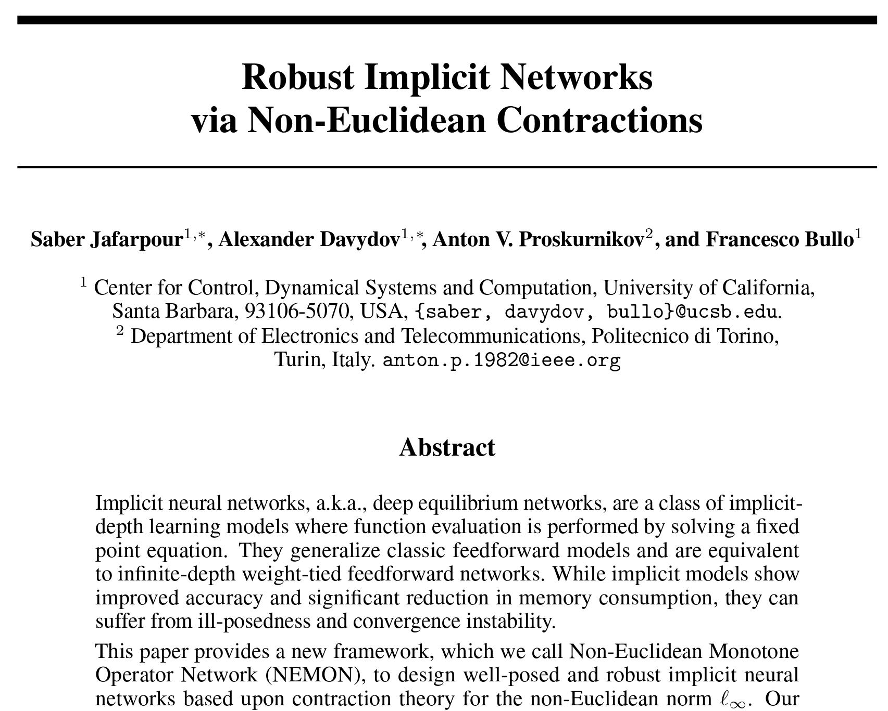

NeurIPS, 2021 [OpenReview]
SIAM Review, 2021 [SIREV]
IEEE TAC, 2021 [IEEE Xplore]
IEEE TAC, 2019 [IEEE Xpolre]
|
|
| HOME | C.V. | RESEARCH | PUBLICATIONS | TEACHING | TALKS | ERDÖS NUMBER |
|  |
|
|
|
|
NeurIPS, 2021 [OpenReview] |
SIAM Review, 2021 [SIREV] |
IEEE TAC, 2021 [IEEE Xplore] |
IEEE TAC, 2019 [IEEE Xpolre] |